§Executive Summary
The OctaneX MCP project is a working, locally-run bridge that lets an AI agent (Hermes) drive Octane X — a GPU photoreal renderer — through an allowlisted JSON command queue and a Lua bridge. It already produces real renders end-to-end. The missing piece is a human-facing surface that lets a person express intent in natural language and watch it become a precise visual in seconds, without ever opening Octane's node graph.
What exists
A complete agentic loop: NL intent → tool calls → validated commands → Lua bridge → native render → vision review → re-patch.
14 shipped MCP tools, a self-improving recipe book, parity-guarded bridges, JSON scene manifests.
What's missing
A live, minimal human interface. Today the human drives the agent from a chat pane; there is no canvas-native control surface, no on-screen intent feedback, no reveal-on-demand inspector.
The proposal
OctaneX Agentic Canvas — a clutter-free viewport (the render IS the UI) with a single persistent command bar, corner intent/status pills, and ⌘K palette + ⌘I inspector that appear only on demand.
Table of contents
1Project Audit — Documentation & Codebase
A read of the docs set (roadmap.md, canvas-roadmap.md, visual-grammar.md, command-schema.md, recipe-library.md, visual-iteration-protocol.md, agent-quickstart.md, local-model-rich-moa.md, scene-plan.md) and the source tree (src/octanex_mcp/, octane_lua/, scripts/, tests/).
1.1 Architecture (as built)
Fig 1 — The current end-to-end loop. A dashboard would attach to the dashed "Human" edge and surface the status/queue/preview signals that are today only visible in logs.
1.2 What is genuinely strong
Local-first & private ✓
No cloud round-trip. Octane X, the agent, and vision review all run on-device (Apple Silicon). This is a defensible differentiator against every cloud render/Midjourney-style tool.
Allowlisted command bridge ✓
The Lua bridge is a strict DSL — no arbitrary Lua execution. This is the right security model for an agent that writes code, and it is already parity-tested.
Self-improving recipe book ✓
Recipes are captured as reusable JSON + OBJ + reference PNG. feedback_log.md drives a review→patch→capture loop. This is the seed of a durable visual memory.
Vision feedback closure ✓
octane_review_preview() + glm-ocr give the agent a real perceptual check, not just "did it run". The render-review loop is the core moat.
1.3 Gaps & fragilities (from the audit)
| Gap | Evidence | Impact on a UI |
|---|---|---|
| No human-facing surface | All control is via Hermes chat / MCP; no canvas UI exists | This is the deliverable — §4 |
| Latency not surfaced | Bridge writes status.json but nothing renders it | UI must show queue→render progress (§3) |
| Render-start wedge risk | Bridge review notes describe a historical start{} hang | UI needs an honest "rendering… N%" + timeout |
| No live preview frame | Only final preview.png is saved; no progressive frame | UI must set expectations (no mid-render pixels yet) |
| Tool sprawl risk | 14 tools; some overlap (set_lighting vs create_light) | Palette should group, not list all 14 |
2Project Potential & Market Position
The objective is "a fluid human–AI interactive visual experience — with AI translating human intent into precise and beautiful visuals in near-real-time." Mapping that against what the project already does reveals a clear, defensible wedge.
2.1 Where the project already wins
- Precision, not just vibes. Diffusion image tools (Midjourney, SDXL) produce plausible images; Octane produces geometrically correct scenes from explicit meshes, materials, cameras, and lights. For data viz, scientific illustration, and product/architecture preview, precision is the whole point.
- Real-time-ish on local silicon. Apple M3 Max/Ultra GPU rendering of a preview frame in seconds-to-tens-of-seconds is competitive with cloud queues for interactive iteration, with zero data leaving the machine.
- Programmable & reproducible. Every scene is a JSON manifest. That is the opposite of a black-box generative model — it is version-controllable, diffable, and automatable.
2.2 The white space
Most "AI 3D" products today are either (a) text-to-3D model generators (slow, one-shot, low control) or (b) pro DCC apps (Blender/Houdini — powerful, but high-friction, node-graph UX). Nobody owns "say it → see it, precisely, locally, in seconds" as a calm, minimal surface. That is exactly the gap this project fills.
Near-term value
Researchers, analysts, and technical communicators who need a correct visual now without learning a renderer. Internal tool, then a product.
Strategic moat
The recipe book + vision review loop compound: every corrected render makes the next one better. A dashboard that captures intent→scene history turns usage into training data for the agent.
2.3 Potential scorecard
| Dimension | Today | With dashboard |
|---|---|---|
| Intent → visual latency (perceived) | Hidden in chat | Sub-400ms acknowledgement, live progress |
| Approachability | Requires agent fluency | One command bar; reveal-on-demand depth |
| Correctness guarantee | Strong (explicit scene) | Unchanged — UI doesn't weaken it |
| Memorability / continuity | Recipe book only | Scene timeline + intent history on-screen |
| Differentiation vs diffusion tools | High (precision) | High + visible (you watch it build) |
3Industry Best Practice — Fluid Human–AI Visual Interfaces
Three converging threads define the current state of the art. Together they dictate the UI's spine: intent-based UX, the cognitive-latency stack, and ambient/multimodal continuity.
3.1 Intent-based UX (Nielsen, 2024–25)
Jakob Nielsen's framing: the next UX paradigm shifts from intent→command (the user specifies exact steps) to intent→outcome (the user states the goal; the system figures out the steps). The UI's job becomes confidence, not control — show the user the system understood, then show the result, and make correction trivial.
"Users should state what they want to achieve and let the AI figure out how to do it… The interface must make the user feel confident the AI got it right." — J. Nielsen
Implication for this project: The command bar is an intent field, not a command line. The "Build" action translates intent → tools invisibly. The on-screen "Intent" pill is the confidence anchor.
3.2 The cognitive-latency stack → Render-loop mapping
UX Tigers' "Think-Time UX" decomposes human patience into five bands. Each band demands a different UI response. A fluid interface must carry the temporal burden so the human's attention is never left hanging.
Fig 2 — The five latency bands and exactly where the proposed UI responds in each. This is the backbone of the design.
3.3 Ambient, multimodal, continuous (2025 trends)
- Ambient computing: the interface recedes; the output is the foreground, controls fade to the edge. Directly matches Octane's "clutter-free" presentation mode.
- Multimodal intent: text, voice, drag, and reference-image all feed the same intent. The command bar should accept attachments (e.g. "make this like that").
- Post-visit continuity: a session shouldn't evaporate when closed. Scene manifests + recipe memory make the canvas resumable — the fifth latency band handled natively.
4The UI Concept — "OctaneX Agentic Canvas"
A minimal, slick human surface that wraps Octane X's clutter-free presentation viewport. The render is the interface. Controls are edge-anchored and reveal-on-demand.
4.1 Design principles
1. Render-first
The viewport fills the frame. No toolbars, no panels, no node graph. Octane's clutter-free mode is the default state.
2. One persistent control
A single command bar ("say what you want to see"). Everything else is summoned, never parked.
3. Confidence over control
Show the system heard you (intent pill), show progress (status), surface the QA verdict (preview card).
4. Reveal-on-demand
⌘K palette, ⌘I inspector, ~ clutter-free. Depth appears only when asked.
5. Honest about latency
Live progress from bridge.status.json. No fake spinners; real queue→render→review stages.
6. Local & continuous
Nothing leaves the machine. Scene timeline + recipe memory make every session resumable.
4.2 Layout — the canvas as HUD
Fig 3 — Proposed default state. The render owns the frame; a single command bar sits at the bottom; corner pills carry intent + status.
4.3 The three reveal surfaces
⌘K · Command palette
Intent field + grouped tool/recipe suggestions (not all 14 tools). Typing flows straight into the command bar. Mirrors the agent's tool vocabulary.
intentrecipestools⌘I · Inspector
Reveal-on-demand side drawer mapped to the live scene manifest: camera, lights, materials as sliders + one-click "suggested patches" from suggest_camera_fix etc.
~ · Clutter-free
Toggles every HUD element away, leaving pure render (present/hang mode). The same key the user already expects from Octane's presentation mode.
fullscreenpresent4.4 How each latency band is served
| Band | UI response | Source signal |
|---|---|---|
| Perception (≤400ms) | Intent pill lights; command id bubble in corner | Queue write ack |
| Comprehension (≤2s) | "Queued N commands" → "Rendering… %" | bridge.status.json heartbeat |
| Decision (≤10s) | Preview card + one-line QA verdict (OK/clipped/low-contrast) | octane_review_preview() |
| Execution (≤2min) | Inspector sliders + suggested-patch chips | scene manifest + suggest_* tools |
| Recovery (return) | Scene timeline + recipe memory | manifests + recipe book |
4.5 Why clutter-free is the right anchor
Octane X already ships a "clutter free" presentation mode — it strips UI chrome so the image is the message. The dashboard borrows that exact philosophy: default to the image, summon chrome only on intent. This is not a skin; it is a direct continuation of the renderer's own UX DNA, which means the mental model transfers seamlessly from Octane power-users to first-time intent-users.
5Interactive Mockup & States
A working HTML prototype was built with the project's own tooling mindset (self-contained, no external deps). Open it and try the three states. Screenshots below are real captures of that prototype running.
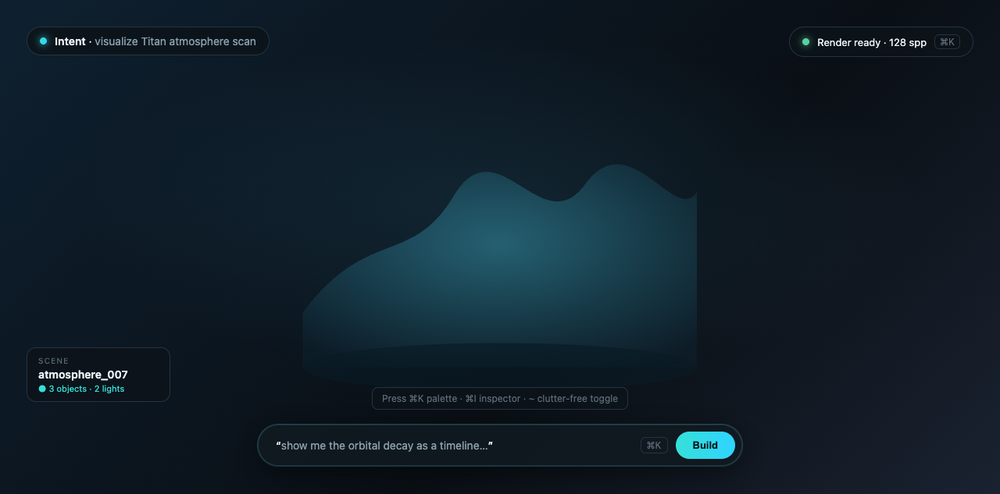
Default — render + command bar + corner pills. Pure canvas.
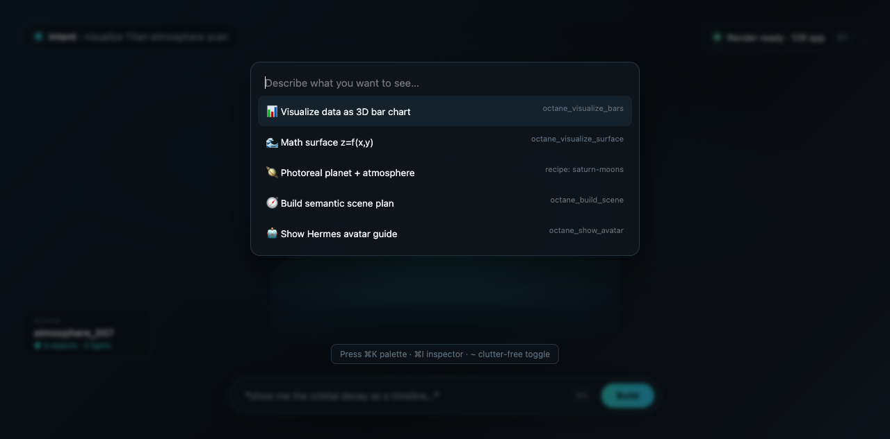
⌘K — intent palette with grouped tool/recipe suggestions.
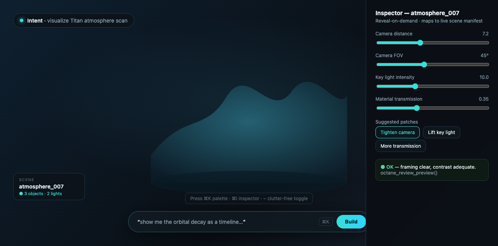
⌘I — reveal-on-demand inspector mapped to scene manifest.
reports/dashboard-proposal/assets/dashboard-mockup.html. Press ⌘K to open the palette (typing updates the command bar + intent pill live), ⌘I for the inspector, and ~ to collapse all HUD chrome into pure clutter-free render mode. Esc closes overlays.
5.1 What the mockup proves
- The render can own the entire frame while keeping a single, calm entry point for intent.
- Depth (palette, inspector) can be summoned and dismissed without permanently consuming screen space.
- The same intent string flows from palette → command bar → intent pill, so the human always sees what the agent heard.
- Inspector controls map 1:1 to the existing scene-manifest schema (camera distance/FOV, light intensity, material transmission) — no new renderer API needed.
6Evidence — Real Renders From the Project
These are genuine Octane X outputs already in the repo, produced through the same bridge the dashboard would control. They demonstrate the breadth the intent surface must cover: data, math, space, product, and scientific illustration.
6.1 Data & scientific viz
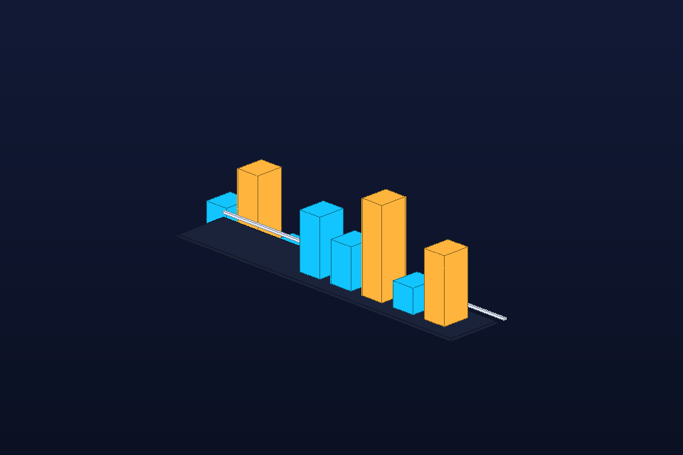
3D bar chart — octane_visualize_bars
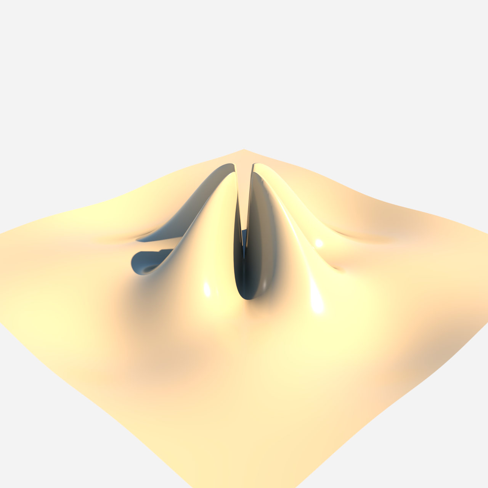
Math surface z=f(x,y) — native render
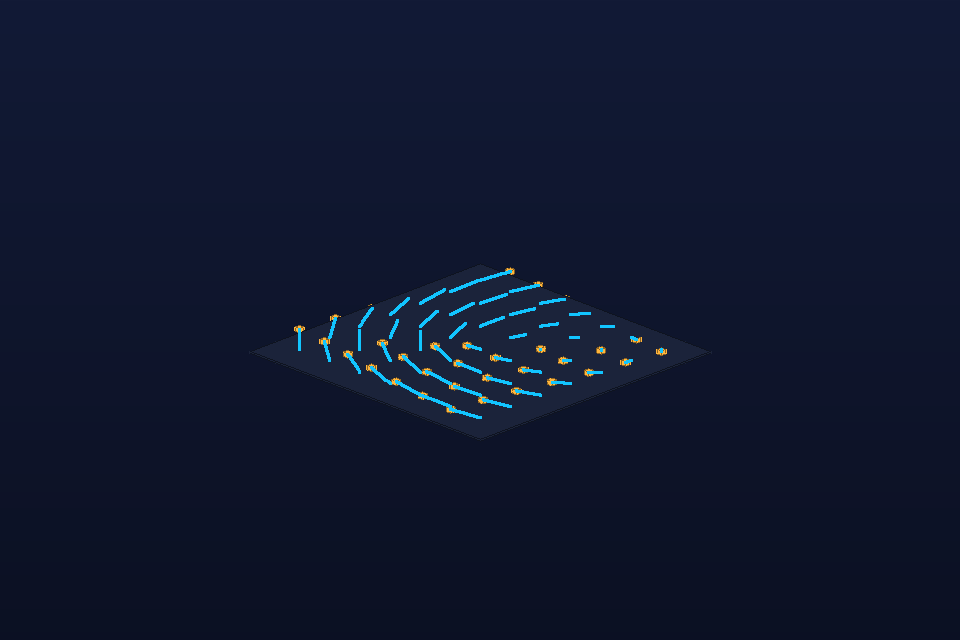
Vector field visualization
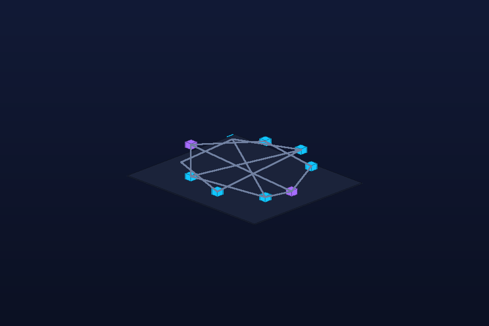
Network / graph layout
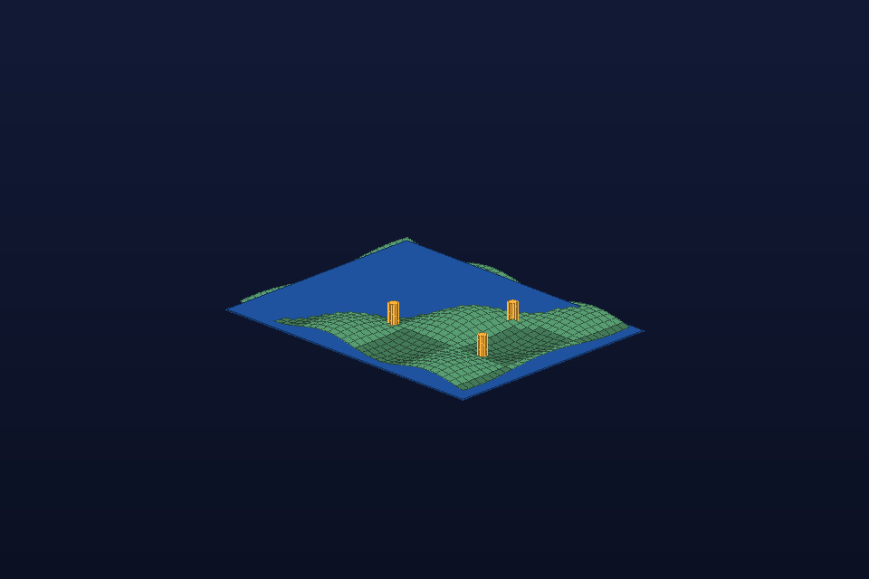
Geospatial terrain
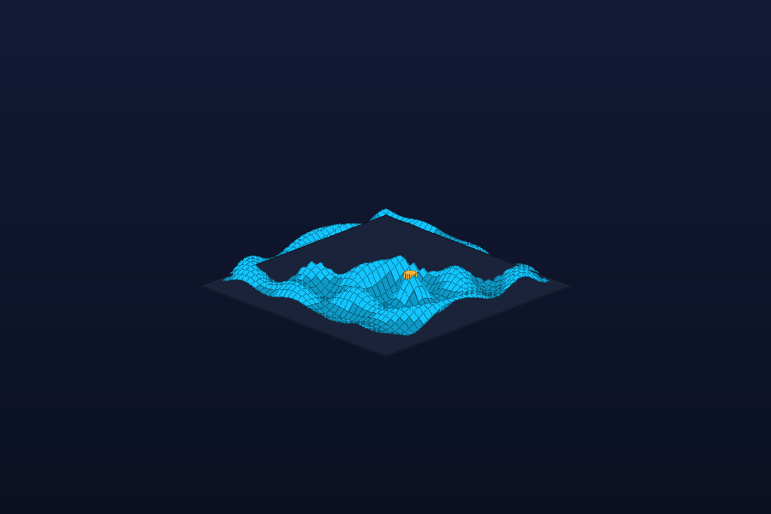
Wave interference field
6.2 Photoreal & concept
Photoreal planet + atmosphere — saturn-moons recipe
Photoreal Earth — space recipe
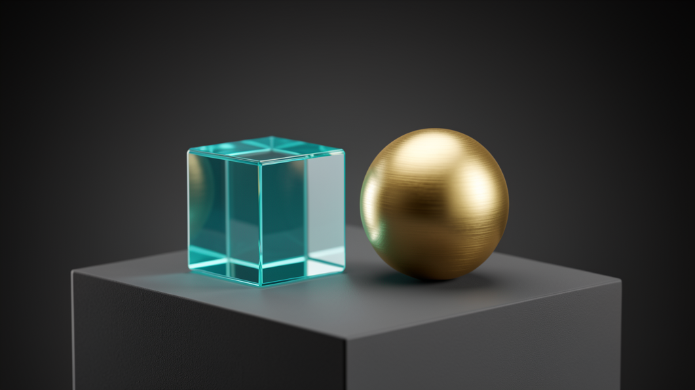
Photoreal product studio
Photoreal vase — native render (looped)
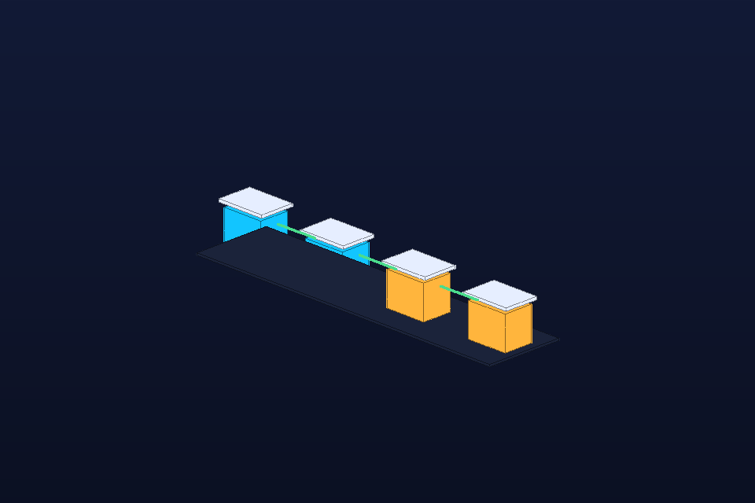
Pipeline / architecture flow diagram
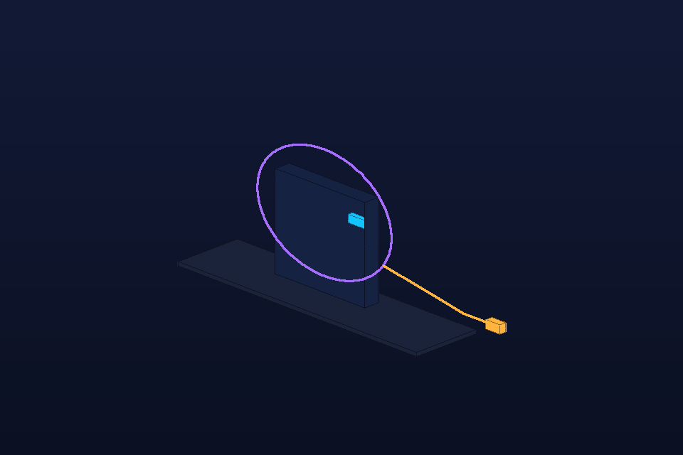
Hermes avatar guide — octane_show_avatar
6.3 The render-review loop in action
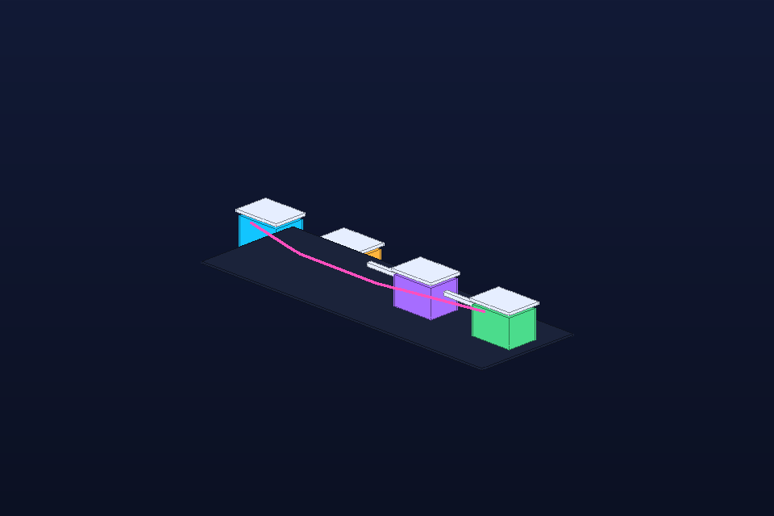
Vision-feedback iteration loop — the core moat
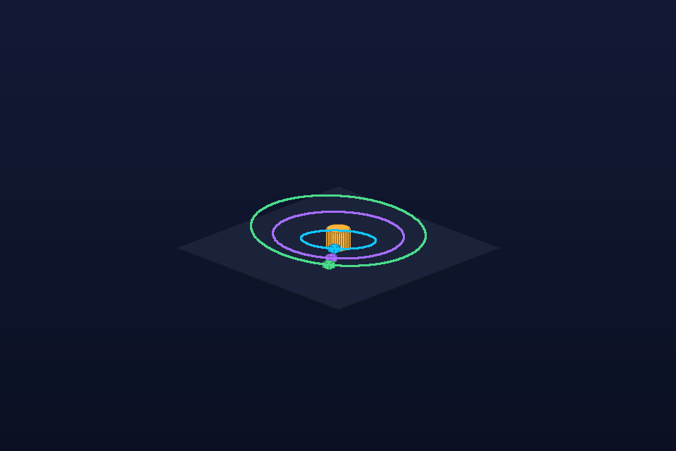
Physics orbits — simulation-to-render
All renders above are genuine Octane X outputs committed in examples/recipes/ and produced through the same bridge the dashboard would control. The set spans data viz, math surfaces, geospatial, space/photoreal, product studio, and the agent's own avatar/architecture guides.
7Build Roadmap & Acceptance Criteria
The dashboard is a thin, local web/Electron surface over the existing MCP + Octane layer. No renderer changes required. Phased so each step is independently demoable.
Phase A — Canvas shell (1–2 days)
- Local web view that launches Octane X (or attaches to a running instance) and displays its viewport full-bleed.
- Bottom command bar wired to Hermes agent (send intent → receive tool-plan summary).
- Corner Intent + Status pills fed by
bridge.status.jsonheartbeat.
Acceptance Type an intent → Octane builds the scene → preview appears, with live status text. (Matches the mockup default state.)
Phase B — Reveal surfaces (2–3 days)
- ⌘K palette: grouped tool/recipe suggestions, attachments (reference image intent).
- ⌘I inspector: sliders bound to scene manifest; "suggested patch" chips calling
suggest_camera_fix/suggest_lighting_fix. - ~ clutter-free toggle (hide all HUD).
Acceptance Opening inspector and dragging camera-distance slider re-renders; suggested-patch chip applies and re-queues.
Phase C — Latency honesty & continuity (3–4 days)
- Progress stages: queued → processing → rendering % → review → ready, with honest timeouts (no wedge).
- Preview card with
octane_review_preview()verdict (OK / clipped / low-contrast). - Scene timeline + intent history; resumable on reopen (ties to recipe book).
Acceptance During a 20s render the UI shows real stage transitions; closing and reopening restores the last scene + intent.
Phase D — Voice & multimodal (stretch)
- Voice intent → same command bar; drag-reference-image intent ("like this, but…").
- Export/share: copy PNG, copy scene-manifest JSON, "save as recipe".
8Risks, Mitigations & Open Questions
Perceived latency
Octane preview frames take seconds–tens of seconds. Mitigation: sub-400ms acknowledgement + live stage progress (§3.2). Never a dead spinner.
Render-start wedge
Historical start{} hang in the bridge. Mitigation: honest "rendering…" with timeout + restart path; this is a bridge concern, surfaced honestly in UI.
Tool sprawl in palette
14 tools, overlapping. Mitigation: palette groups by intent ("visualize data", "photoreal", "scene"), not raw tool list.
Agent misinterpretation
NL → wrong scene. Mitigation: intent pill + preview card verdict make misreads catchable in <10s; one-click re-patch.
Octane licensing/sandbox
Container FS + app-bundle coupling. Mitigation: dashboard reads the existing workspace contract; no new filesystem assumptions.
Scope creep
Easy to rebuild Octane in HTML. Mitigation: dashboard is a surface, not a renderer. Hard rule: no scene logic in the UI.
Open questions for Craig
- Host: native
WKWebViewoverlay inside Octane's own window, or a separate Electron/WebView app that attaches to the running Octane? (Affects clutter-free key handling.) - Multi-surface: should the same intent surface also drive the Mac Studio (M3 Ultra, 512GB) for heavy renders, with the local machine as the thin client?
- Voice: is hands-free intent a day-1 requirement or Phase D stretch?
- Share: do outputs need one-click export to X/image, or stay local-first by default?